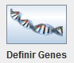

Definir Cromosoma como su nombre indica, permite definir la configuración que será utilizada para el cromosoma, incluyendo:
Nombre de los genes
Tipos de los genes
Restricciones
Para definir el cromosoma primero debe pisar sobre el botón que se muestra en la imagen:
Se abrirá una ventana, donde podra configurar el cromosoma a partir de sus genes.